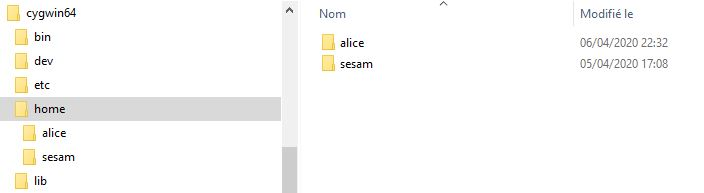
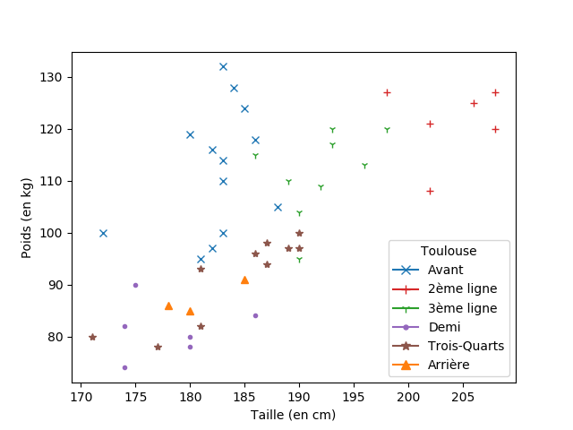
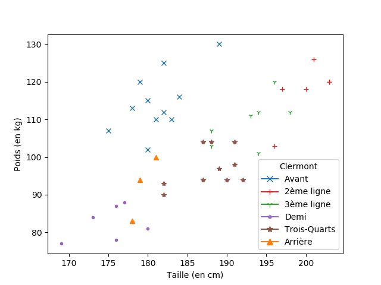

Ce site reprend ce qui est présent sur l'ENT lyceeconnecte
Il permet d'accéder facilement au cours, l'accessibilité à l'ENT risquant d'être mise à dure épreuve suite au nombre très important de connexions.
Mettez l'adresse de ce site dans vos favoris, pour y accéder directement.
La correction du questionnaire est accessible en bas de la partie sur le CSS.
Travaux à rendre :
Voici l'activité proposée : activité Filius
Et les documents à récupérer : documents à télécharger
Quelques explications en vidéo pour utiliser le fichier index.html
Quelques explications supplémentaires en vidéo sur ce qu'il faut retenir de cette activité :
Réponses à la dernière partie de l'activité sur l'étude d'une trame
Voici le fichier que je comptais vous distribuer en classe : cours élèves
Je l'ai complété : cours réseaux
Pour mieux retenir ce qui est important, vous pouvez partir de la partie vierge (premier fichier) et vous le complétez avec le deuxième...
Dans ce cours, j'ai mis en couleurs les choses à retenir et surligné d'autres informations importantes.
Pour l'explication du "bit alterné" dans le protocole TCP, vous devez connaitre ce principe de vérification (c'est dans le programme) et savoir qu'il a une faille.
Vous pourrez par ailleurs être interrogés sur les commandes qui peuvent être écrites dans une console (ou un shell) : ping, traceroute (ou tracert), ipconfig (ou ip).
Voici quelques éléments qui vont vous permettre de prendre en main l'activité sur l'interface homme-machine.
Voir dans ce fichier. Vous devrez également télécharger le questionnaire HTML/CSS (les explications pour le CSS étant dans la partie suivante) ainsi que deux fichiers utiles (décompressez ce fichier pour travailler).
Pour comprendre où se trouvent les outils de développement Web d'un navigateur, j'ai réalisé cette vidéo :
Dans le fichier, vous trouverez des éléments pour mettre en place le fichier css servant à donner du style à une page Web.
Pour suivre les explications, vous vous servirez du fichier (à décompresser).
Compléter la deuxième partie du questionnaire présent dans la partie HTML (questionnaire HTML/CSS).
Dans le fichier, vous trouverez une activité de découverte d'interactions dans une page Web avec le langage Javascript.
On utilisera le fichier (à décompresser).
Comme préciser dans le document, il faut travailler avec la console du navigateur ouverte.
À chaque modification du fichier script.js, il faut l'enregistrer et actualiser la page pour voir l'effet.
Voici une correction du travail demandé. Il faut décompresser le fichier puis ouvrir le fichier index.html avec le navigateur. Bien regarder les actions créées dans le fichier script.js.
Voir dans ce fichier qui est juste la première partie du cours complet.
Vous pouvez tester le petit programme python et vérifier qu'il vous donne bien ce qui est expliqué (je ne vous demande pas de connaitre ces fonctions).
Vidéo sur l'utilisation de la Weblinux ou du logiciel Cygwin (pour windows).
Pour Cygwin, vous aurez besoin de ce fichier alice.zip à décompresser.
Vous devez coller le dossier alice dans C://home comme indiqué sur la capture ci-dessous (ou dans la première vidéo
à 3min14).

Explication ensuite de la gestion des droits de fichiers et répertoires:
Voir dans ce fichier qui est juste la deuxième partie du cours complet.
J'ai répertorié la liste des commandes qui peuvent vous servir pour l'activité du mardi 07 avril.
Mardi 07 avril : compléter le questionnaire sur moodle. Utiliser Weblinux ou cygwin pour valider vos propositions, ec qui vous permettra de retenir les commandes importantes.
Dans le cours, je vous ai mis des liens pour aller plus loin.
Voici le cours complet (même s'il manque la dernière partie qui sera une activité à faire en classe).
Voir dans ce fichier qui est juste la première partie du cours complet.
Effectuer le questionnaire sur moodle pour compléter le cours en identifiant les capteurs (logiques ou analogiques) et les actionneurs.
Voir dans ce fichier qui est juste la deuxième partie du cours complet.
Ceci présente la programmation en Arduino. Elle donne des informations sur les instructions à connaitre dans ce nouveau langage.
Voir dans ce fichier qui est juste la deuxième partie du cours complet.
Présentation des entrées et sorties sur al carte puis exemple avec une LED et un buzzer.
Voici le début de la version élève du cours sur l'algorithmique.
Semaine du 04 mai:
Voir dans cette partie extraite du fichier du début de chapitre.
Relire la partie sur la recherche séquentielle (qui n'est pas quelque chose de nouveau) et compléter les deuxièmes programmes (en python et javascript).
Comprendre le principe de l'algorithme et son application sur la liste proposée en exemple.
Effectuer la même décomposition de l'algorithme avec le deuxième exemple.
Correction de ce deuxième exemple.
Il faut avant tout retenir le nombre de tests maximal effectué en fonction de la taille du tableau. Les courbes comparent les différents coûts des algorithmes rencontrés cette année.
L'idée est de comprendre qu'on doit disposer d'un variant de boucle pour vérifier la terminaison d'une boucle et d'un invariant de boucle pour valider la correction.
Correction de l'exercice de la partie I.
Voir dans cette partie extraite du fichier du début de chapitre.
Effectuer le travail pour le lundi 11 mai. Il faudra utiliser le fichier JoueursTop14.csv.
Dans le pdf, je vous ai expliqué où retrouver les outils utilisés dans cette activité.
Semaine du 11 mai:
Voici les résultats que vous pouvez obtenir (j'ai apporté quelques compléments pour avoir ces affichages, notamment les légendes).
| Pour l'équipe de Toulouse | Pour l'équipe de Clermont |
|---|---|
|  |  |
Synthèse du travail avec fichier contenant les 3 fonctions.
Mais pour la suite, nous allons repartir avec un fichier dans lequel j'ai ajouté quelques compléments pour améliorer
l'affichage et les possibilités : fichier à utiliser pour la suite.
Voici la suite de l'activité sur l'algorithme knn.
Création d'une fonction distance, puis principe de l'algorithme. Le tester avec le tableur.
Traduction en python (en classe virtuelle mardi 19).
Voici la synthèse du travail sur l'algorithme knn au format html ou en téléchargement (avec un clic droit sur le lien) sous la forme d'un fichier Jupyter (la première partie sert juste à charger le module matplotlib, non présent par défaut dans Jupyter sur l'ENT).
Voici le fichier élève pour cette partie.
Découvrir la définition de ce qui est appelé la méthode gloutonne et l'appliquer à l'exemple des bornes wifi qu'il faut positionner sur une maison en suivant ce lien vers une figure GeoGebra.
Le programme python est donné dans le cours. L'objectif est de répondre à l'exercice qui suit en faisant tourner le programme. Vous pourrez ensuite vérifier votre réponse en programmant cette fonction.
Cette fois-ci l'algorithme est donné en langage courant. Je vous demande de le tester sur un cas particulier. Cette fonction a été construite avec une liste de tuples.
Je vous demande de la transformer et l'écrire en python pour traiter
une liste de dictionnaire (ce qui permettra de l'appliquer avec un fichier csv et donc des données plus importantes).
Voici la synthèse du travail sur les algorithmes gloutons (rendu de monnaie et sac à dos) au format html ou en téléchargement (avec un clic droit sur le lien) sous la forme d'un fichier Jupyter.
Voici le cours complet.
Voici la première partie du cours complet.
Il n'y a pas d'activité particulière si ce n'est de comprendre les requêtes et réponses échangées. Vous pouvez les tester dans votre navigateur : ouvrir les outils de développement, aller dans l'onglet Réseau (ou Network) et charger une page de votre choix, vous y verez les différentes requêtes dont celles dont j'ai parlées si vous allez sur mon site.
Voici une vidéo qui vous montre comment utiliser le navigateur (Firefox dans mon cas, mais ça marcherait avec Chrome ou Edge si ce n'est que les outils de développement sont accessibles par F12).
Créer les deux fichiers python et les ouvrir dans deux éditeurs différents (ou sur deux ordinateurs différents d'un même réseau local). Lancer le fichier serveur, puis le fichier client et envoyer du texte au serveur.
Voici la deuxième partie du cours complet.
Dans cette activité, nous avons besoin de travailler avec un serveur et un client pour comprendre le fonctionnement d'un formulaire.
Pour le client, c'est toujours le navigateur, mais pour le serveur, nous allons utiliser un serveur local installé sur la même machine.
Pour Windows, on va utiliser UwAmp, il est
très simple d'utilisation et peut être installé sous forme portable en téléchargeant un .zip.
Voici une vidéo qui vous explique comment utiliser UwAmp.
L'activité permet de créer un formulaire et de comprendre comment le navigateur communique avec le serveur pour lui envoyer la page HTML personnalisée avec les saisies dans les champs du formulaire.
Vous aurez besoin du fichier index.html (faire un clic-droit puis enregistre pour récupérer le fichier source).
Voici une activité qui peut être vue comme une continuité du travail opéré sur l'image dans la cadre du chapitre 3.